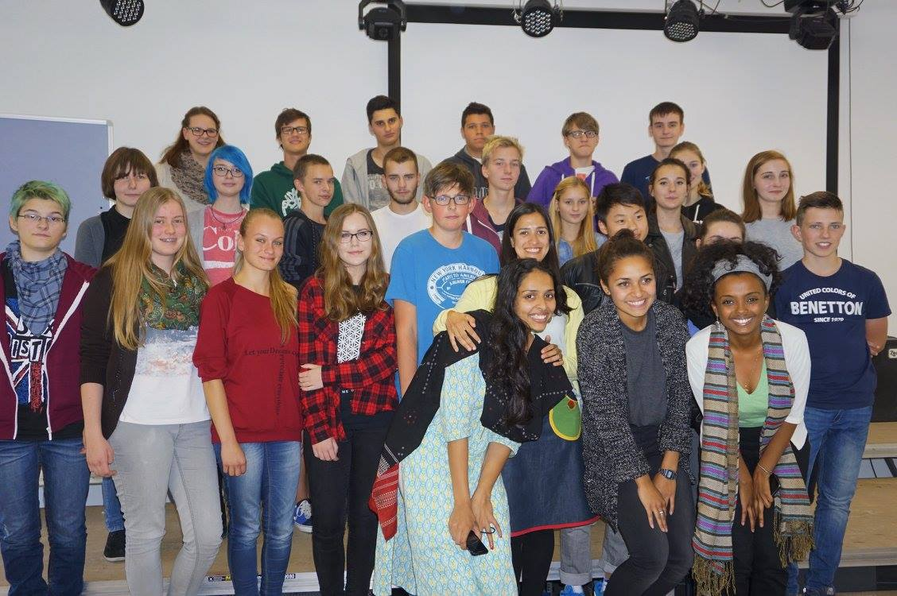
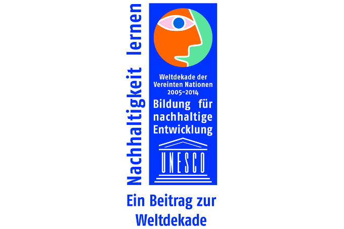

Bridging Cultures is a ‘Global Cultures Education Program’ with the main aim of promoting intercultural relationships and raising awareness among students in Berlin about developmental issues faced by so called under-developed countries. By exposing the students to new cultures and ideas, we hope to equip them with the knowledge that they need to think outside the box and solve problems on an international level.
Through a number of weekly workshops, pupils have the opportunity to discover other parts of the world especially the three developing continents of Asia, Africa and South America. The key word for the 21st century is ‘change’ and we believe that change should happen at a fundamental level by educating young people early on so that they get a more complete picture of the world today and become motivated to take action and make a positive impact.
Pupils have the opportunity to look deeply into the various Millennium Development Goals and see how these points are gradually being implemented in the various continents. The workshops not only aim at presenting and explaining issues but also stimulate the minds of the students in an interactive way so that they are able to contribute to important global issues.
The workshops also highlight various cultural aspects specific to each continent such as music, food, clothing, religion, sports, etc. Facilitators from various parts of the world run these workshops prompting new views, critically engaging students, discussing current affairs in developing countries and ultimately encouraging students to present real solutions to real problems. The whole program is carried out in the English language.
In 2011 the "Bridging Cultures" project was honored by UNESCO with the "Education for Sustainable Development" award.
If you are a school in the Berlin area or an international facilitator interested in becoming involved in this initiative, please contact us at: info@hope-found.org or call the project team: (0049) 3029007192.
References:
Otto-Nagel-Gymnasium